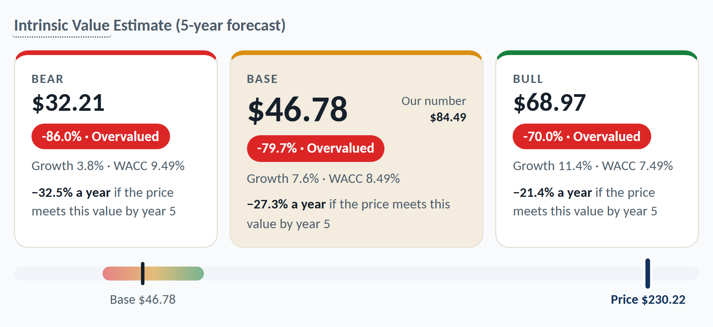
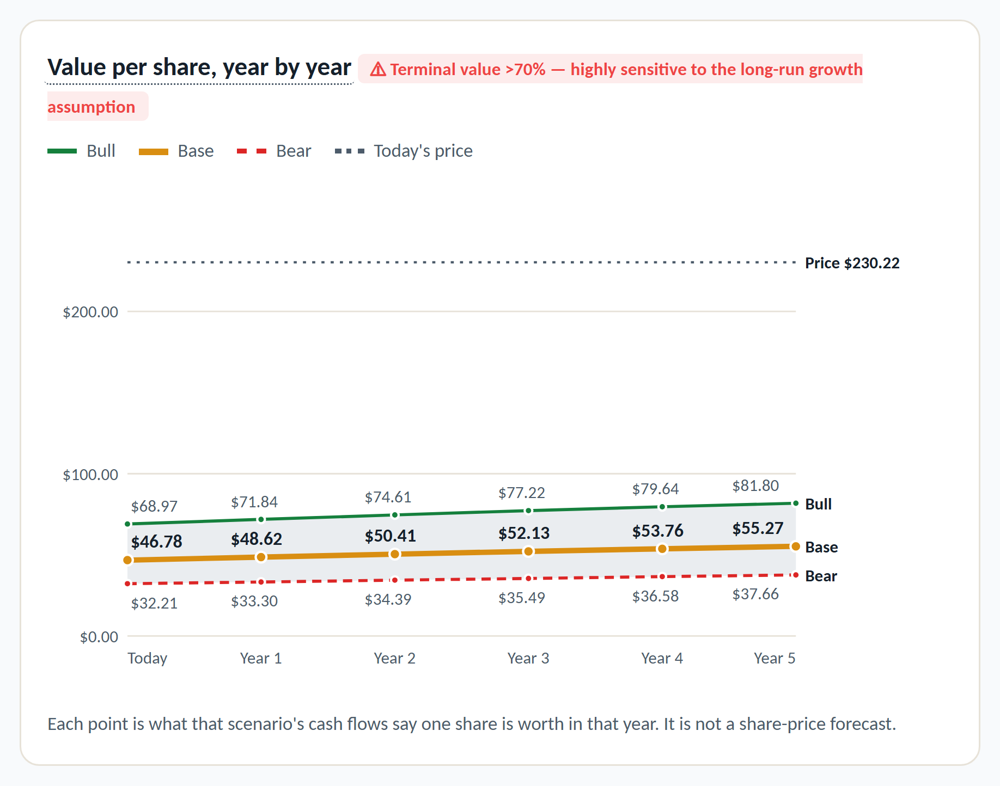
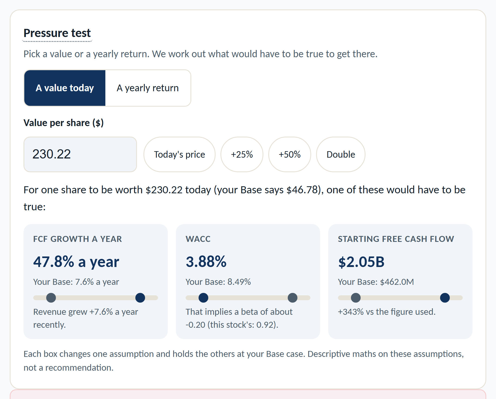
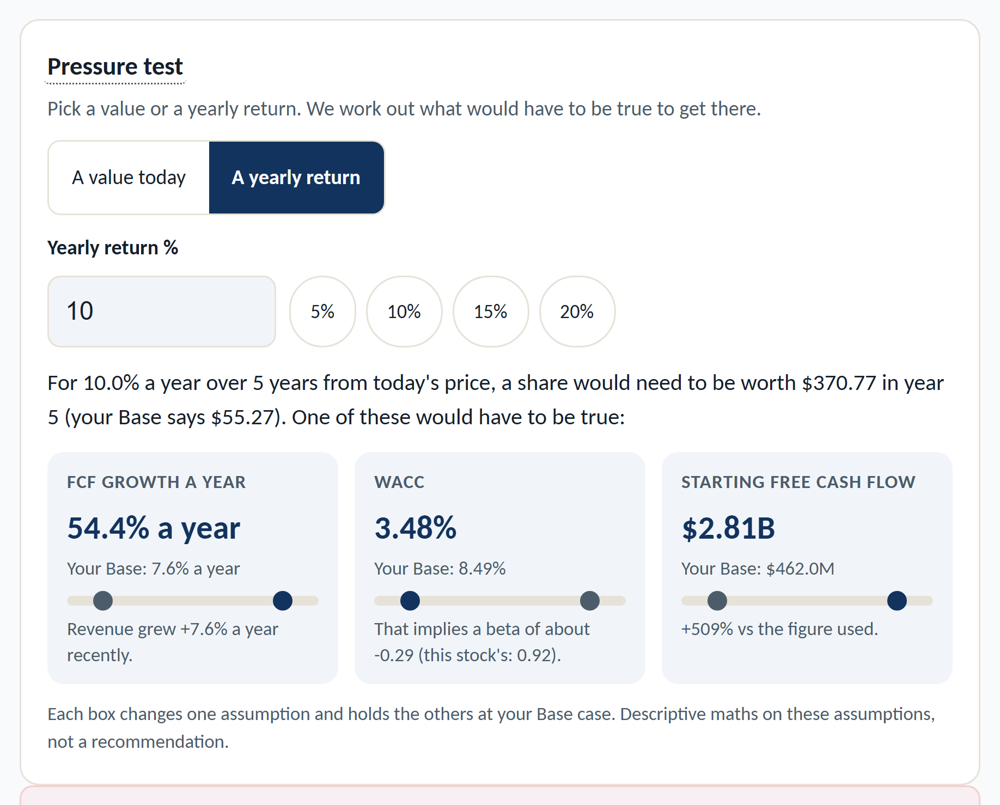

GTA VI Made $3.8 Billion in a Day. What Does Take-Two's Share Price Need It to Earn?
A note on authorship: The research, analysis, and opinions in this article are the author's own. Claude (Anthropic's AI) assisted with drafting and editing the prose.
Grand Theft Auto VI went on sale on 19 November. By the end of that day, players had spent an estimated $3.79 billion on it worldwide, according to Rockstar Games' own estimate. Reports called it the biggest launch day of any entertainment product, film or game.
Rockstar's owner, Take-Two Interactive (TTWO), had a quieter week on the stock market. The shares fell on launch day, then recovered. At the close on 27 November they were $230.22: up 19% in a month, but still down 6% on a year ago and 13% below their July high of $265.94.
Why didn't a record launch send the shares soaring? Probably because the market had expected a huge launch for years. So we'll ask a narrower question that numbers can answer:
At $230.22 a share, how much cash does Take-Two have to make, every year, for the price to make sense?
How to read the numbers below. Every value in this article comes from running Take-Two's reported cash flows through a mechanical formula, a discounted cash flow (DCF) model, with growth and discount-rate assumptions we state. It isn't a view on the game, the company's management or its prospects, and none of it is a forecast.
Step 1: Day-one sales are not cash in the bank
That $3.79 billion is what players spent at the till and online. It isn't Take-Two's revenue: console platform fees, retailer margins and sales taxes come out first. It's also an estimate, not an audited result.
The company's own numbers are more modest. Take-Two still expects net bookings of $8.0 to $8.2 billion for its financial year to March 2027, the year GTA VI launched in. (Net bookings is roughly what customers bought from Take-Two, before accounting adjustments.) That's about 20% more than the $6.72 billion it booked the year before.
And what a valuation actually runs on is free cash flow: cash from operations minus what the company spends on equipment and buildings. This is the cash a business could hand back to its owners. Here's Take-Two's:
| Financial year (ends 31 March) | Revenue | Free cash flow |
|---|---|---|
| 2023 | $5.35B | −$0.20B |
| 2024 | $5.35B | −$0.16B |
| 2025 | $5.63B | −$0.22B |
| 2026 | $6.66B | $0.46B |
| Last 4 quarters (to September 2026) | $6.41B | about $0.10B |
Free cash flow = operating cash flow minus capital expenditure, from Take-Two's cash flow statements as filed with the US Securities and Exchange Commission (SEC). The appendix shows exactly how.
Three years of negative free cash flow while GTA VI was being built, then $462 million in the last full year before launch: about 7 cents of spare cash per dollar of sales. That's the best year in this table, and it's where we'll start.
Step 2: What our DCF says at $462 million a year
Our free DCF Valuation tool starts Take-Two from our data provider's free cash flow figure ($787.6 million over the last 12 months), which counts some items differently from the cash flow statement. For this article we typed the company's reported $462 million into the page's "starting free cash flow" box. You can do the same. Then the page gives three answers:

The assumptions behind the Base case of $46.78 a share:
- Starting cash: $462 million a year, the year to March 2026.
- Growth: 7.6% a year for five years, the pace Take-Two's revenue grew over the last three years, then 2.5% a year after that, forever.
- Discount rate: 8.49%. This is the yearly return an investor would want for the risk of owning the shares. Take-Two's beta is 0.92, so its share price has typically moved a little less than the market.
The value-by-year chart shows what those cash flows say a share is worth in each of the next five years:

The dotted line is today's price. It sits far above all three cases for all five years. So Take-Two's pre-launch cash flow, growing at its old pace, gets nowhere near $230. Of course it doesn't: the whole point of GTA VI is that the next few years should look nothing like the last few. The question is how different they have to be.
Step 3: The Pressure test: what does $230 assume?
The Pressure test runs the valuation backwards. Choose "A value today", type today's price, and it works out what would have to be true for one share to be worth $230.22:

Each box changes one assumption and keeps the rest at our Base case. Any one of these would justify today's price:
- A discount rate of 3.88%. That's below what the US government pays to borrow for ten years. The page translates it into a negative beta, as if Take-Two shares rose when the market fell. This route doesn't stand up.
- Free cash flow growing 47.8% a year for five years, from $462 million to about $3.3 billion a year by year 5.
- Starting free cash flow of $2.05 billion a year, then the same 7.6% growth, reaching about $3.0 billion by year 5.
The last two say the same thing in different ways. Today's price assumes Take-Two becomes a business that makes $2 billion or more of spare cash a year, every year, about 4.4 times its best year so far, and keeps growing from there.
Step 4: Does $2 billion a year make sense?
The Pressure test doesn't say whether that's likely. It hands you a number to check. Here's the context.
Against the guidance: $2.05 billion is about 25 cents of free cash flow for every dollar of the $8.1 billion in bookings Take-Two expects this year. Last year it kept about 7 cents of every dollar of revenue as free cash flow. A launch year should do much better: a big game costs most of its money before release, and much of it was already spent in the years of negative cash flow above.
The real question is year two, and every year after. A launch is a one-off: each player buys the game once. To keep making $2 billion or more a year, the game has to keep earning after launch, the way GTA V's online mode did for over a decade. Before GTA VI, Take-Two's recurrent consumer spending (in-game purchases, virtual currency and add-ons) was 78% of its bookings. A new GTA Online, and how much players spend in it, is what turns one record launch into a recurring business. That's the part no launch-day number can tell you yet.
So, in numbers only: Take-Two's price doesn't just assume GTA VI was a hit. It assumes the game, plus the rest of the company, produces around $2 billion of spare cash every year from now on, against a best of $462 million before launch. Possible, maybe: GTA VI is the largest launch ever. But that's the size of the bet, and the Pressure test shows it in dollars.
Try a different question
The Pressure test also works with a return. Pick "A yearly return" and tap 10%: for a buyer at $230.22 to earn 10% a year, a share would need to be worth $370.77 in five years. That takes free cash flow growing 54.4% a year, or a starting figure of $2.81 billion:

Or type in the free cash flow you think GTA VI's first full year will bring, and read off the value. When Take-Two reports its December quarter, the first with GTA VI in it, you'll be able to check that number against the real one. If you change something, "Reset to our numbers" puts it back.
Try it yourself Open Take-Two in the DCF Valuation tool and run your own Pressure testNew to DCF? Our beginner's guide builds one from scratch with a coffee shop. For a full picture of Take-Two, including a value investing score and a solvency check, see Take-Two in our Stock Evaluator.
Appendix: where the free cash flow numbers come from
Two lines from Take-Two's cash flow statement, as filed with the SEC (US$ millions):
| Year to March 2026 | Last 4 quarters (to Sep 2026) | |
|---|---|---|
| Net cash provided by operating activities | 624.3 | 367.1 |
| Less: purchases of fixed assets (capex) | (162.8) | (269.1) |
| Free cash flow | 461.5 | 98.0 |
The year figure is from the annual report (Form 10-K) for the year to 31 March 2026. The last-four-quarters figure adds up the four quarterly reports to September 2026. Spending on developing games and licences sits inside operating cash flow, so it's already counted.
Why other websites show different figures: some count a separate line, "asset acquisitions" ($27.4 million in the year to March 2026), as capex, which gives about $434 million. Others show a "levered free cash flow" built with their own adjustments, such as the $787.6 million on our own DCF page by default (see Step 2). We use the company's own two lines.